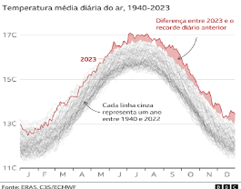
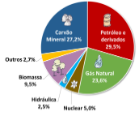

A utilização dos recursos não renováveis gera muitos poluentes e possui um elevado impacto ambiental, por exemplo: aquecimento global, chuva ácida, perda da biodiversidade, bem como o esgotamento das fontes. Além disso, em 2023, era quase improvável não ouvir comentários acerca dos inúmeros recordes de temperatura quebrados. Isso destaca a urgência de intervenções para enfrentar essa problemática, afinal, isso nos mostra cada vez mais o quão alarmante é essa situação, e a necessidade desesperada de mudanças nesse âmbito.

